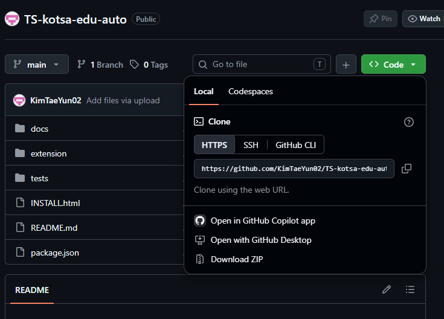
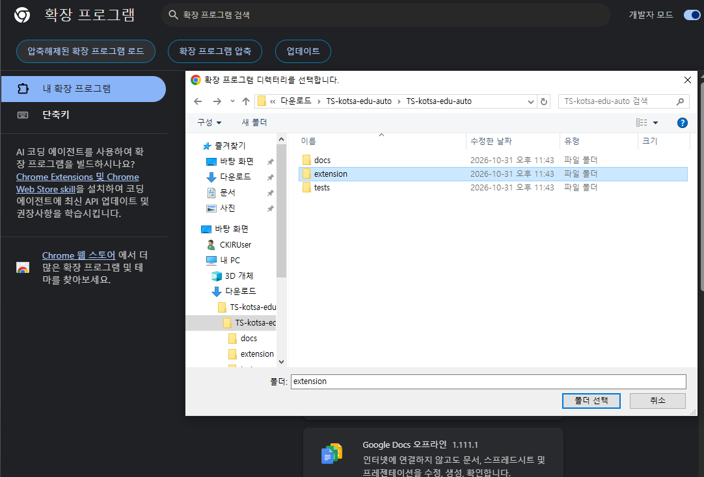
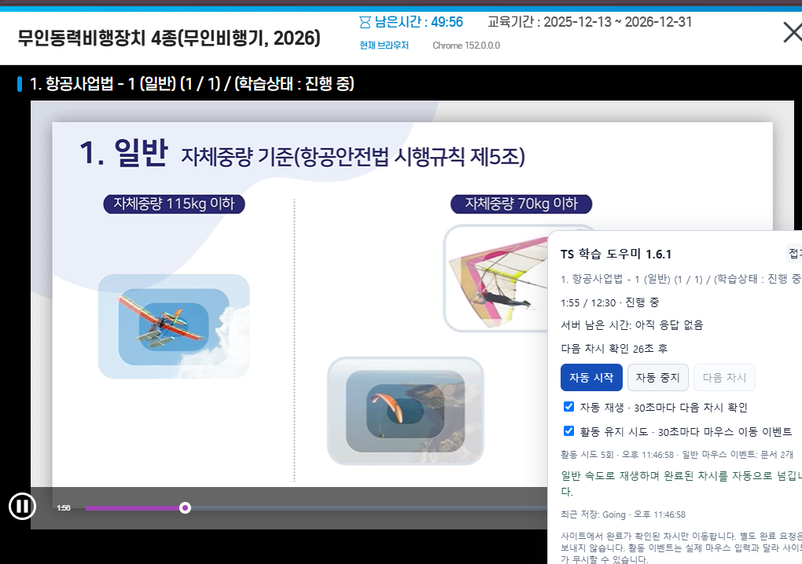

중요: 영상 창을 앞에 열어 두세요. Alt+Tab으로 다른 창으로 전환하거나 영상 창을 최소화하면 학습이 진행되지 않습니다.
저장소에서 Code → Download ZIP을 누른 뒤, 받은 ZIP 파일의 압축을 풉니다.

chrome://extensions를 입력합니다.ZIP 파일이나 상위 폴더가 아닌 extension 폴더를 선택하세요. 설치 후 이 폴더를 삭제하거나 옮기지 마세요.

교육 사이트에 로그인하고 영상을 연 뒤, 오른쪽 아래 패널에서 자동 시작을 누릅니다.
패널이 안 보이면 영상 페이지 새로고침 → Chrome의 확장 프로그램 메뉴에서 TS 학습 도우미 → 모든 학습 탭에 JS 적용 순서로 실행하세요.
